Префектура Токусима · долина Ёсино · ферментация и ремёсла
Долина Ёсино: индиго, соевый соус и сакэ Токусимы
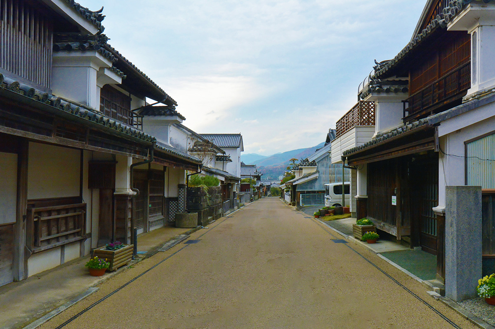
Река Ёсино пересекает Токусиму с запада на восток и веками поила здешнюю землю, на которой выросла целая культура ферментации. От плантаций индиго до чанов с соевым соусом и бочек с сакэ: рассказываем о маршруте, где историю края можно попробовать на вкус.
Река
Там, где Ёсино родила культуру ферментации
Река Ёсино несёт воду через всю префектуру с запада на восток. Всего в Токусиме около пятисот больших и малых рек, и такую густую водную сеть не встретишь больше нигде в стране. Характер у Ёсино, впрочем, крутой: её зовут одной из трёх самых буйных рек Японии, и за свою историю она не раз выходила из берегов.
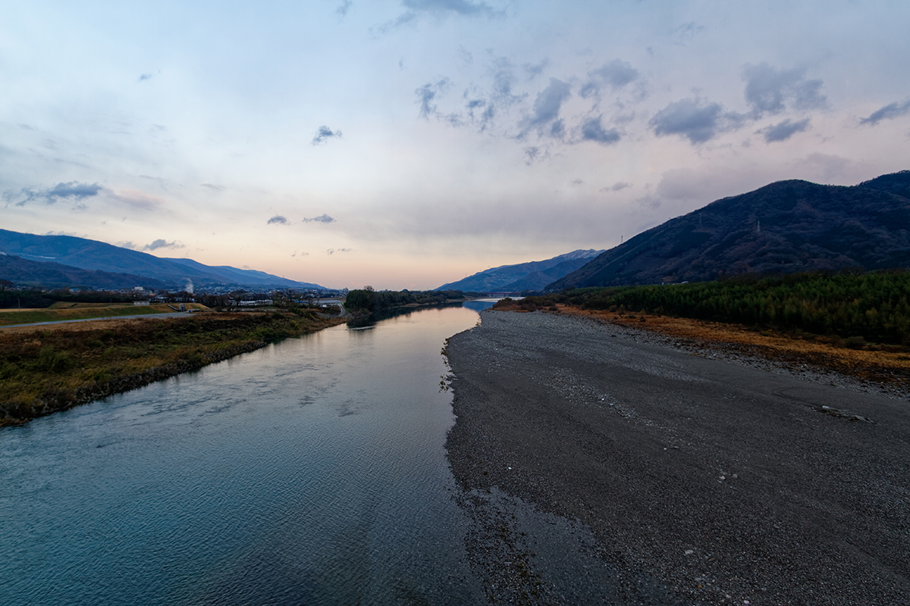
Разливы разоряли деревни, но взгляд земледельца видел в них пользу: с гор вместе с водой приходила жирная, богатая питательными веществами почва. Такой нанос здесь называют «кякудо» и встречают как подарок. Река, измучившая людей, та же река их и кормила.
Рис на здешних землях родился плохо, а вот листовой индиго, из которого делают краситель, прижился. Именно ферментация превратила эту реку, её ил и её воду в основу целой экономики. Позже к индиго добавились сакэ, соевый соус и мисо.
Ава-ай
Индиго, цвет которого выводят бактерии
Индиго Токусимы, которое зовут ава-ай, ведёт историю с эпохи Муромати. За границей этот цвет знают как «японский синий», и здешний индиго долго считался в стране образцовым. В эпоху Сэнгоку и в эпоху Эдо его выращивание стало настолько выгодным, что им занимались целые деревни.
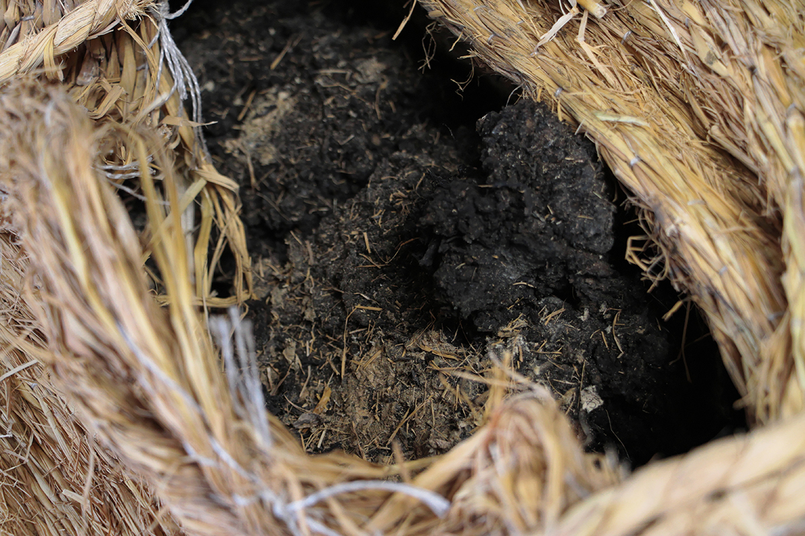
Когда хлопок вошёл в повседневный обиход, спрос на окрашенную ткань вырос. Тюки с индиго сплавляли по Ёсино на лодках, везли через Наруто, мимо Авадзи и Осаки в Киото, и там продавали втридорога как краситель для тканей.
Лист индиго собирают весной и летом, сушат, а потом около ста дней выдерживают в ферментации. На выходе получается плотная масса «сукумо», похожая на чайный лист. К ней добавляют золу, отруби, известь и другие простые материалы, варят щёлочь, а затем дают бактериям сахар и запускают ферментацию красильного раствора.
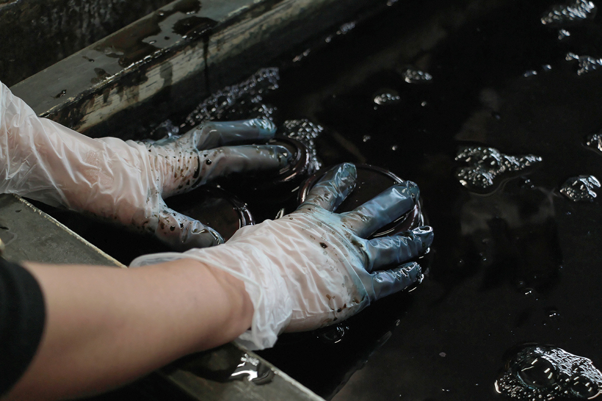
С начала двадцатого века дешёвые импортные красители потеснили индиго, и плантаций стало меньше. Но лист индиго в среднем и нижнем течении Ёсино выращивают до сих пор, а искусство окрашивания берегут несколько мастерских.
Одна из них, «Руафу», устроена в современном бетонном доме в городе Токусима. Здесь держат старый способ «натурального щелочного брожения» и не используют химию: только вода, зола и живые бактерии.
«Индиго отдаёт цвет благодаря ферментации бактерий. Получится хороший цвет или нет, зависит от них, и без молитвы мириадам богов тут не обойтись. Раствор меняется день ото дня, так что индиго это живое существо».
Руководитель мастерской «Руафу»
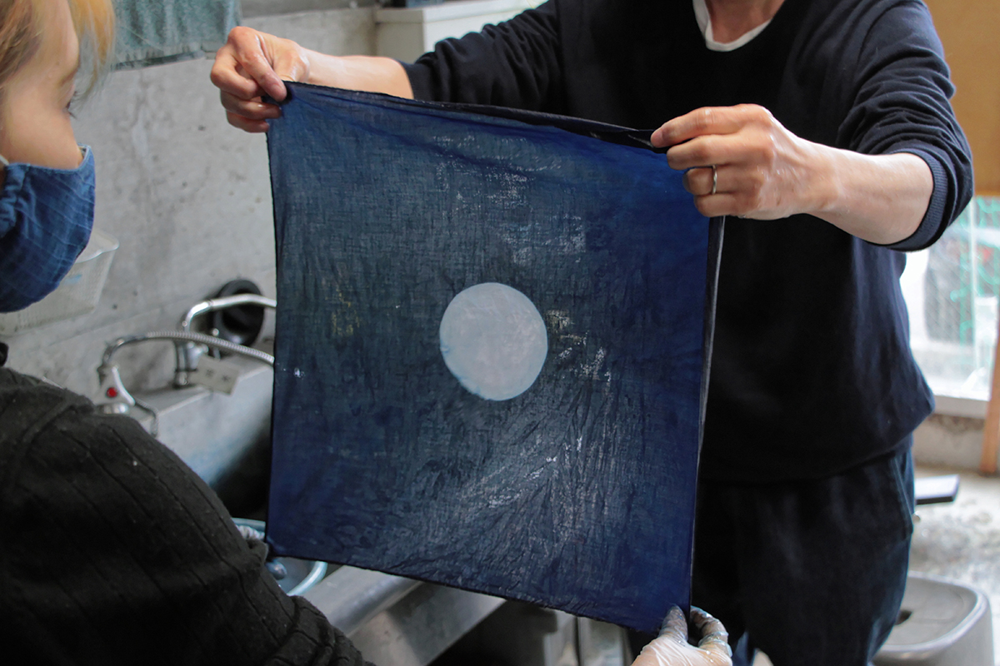
Мастерская индиго «Руафу»
- Адрес
- префектура Токусима, Токусима, Ёсиномото, 6-42
- Телефон
- 080-2983-7550 (бронирование)
- Часы работы
- 10:00–17:00
- Выходные
- нерегулярные
- Мастер-класс
- только по предварительной записи (за день)
- Сайт
- aizome-ruafu.com
Сёю
Соевый соус и мисо из Наруто
В Наруто издавна выпаривали соль, а на полях между делом выращивали сою: соль и соевые бобы всегда были под рукой. Тёплый климат и мягкая вода тоже пришлись кстати. Так Наруто стал местом, где веками делают соевый соус и мисо высокого качества.
В районе Оаса города Наруто, неподалёку от Рёдзэндзи, первого храма паломнического круга по Сикоку, с 1826 года работает мастерская «Фукудзю сёю». Чан с закваской стоит здесь с тех самых пор, и соус до сих пор делают по старому способу: у него ясный цвет и мягкий, чистый вкус.
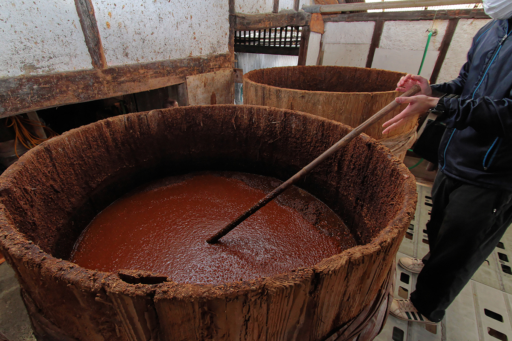
Без плесени-кодзи соуса не бывает. Пропаренную сою смешивают с обжаренной и крупно дроблённой пшеницей, а затем около трёх суток растят грибок при температуре около 30 градусов и влажности около 80 процентов, разминая и перемешивая массу руками. Примерно за неделю появляется жёлтая соевая кодзи. Дальше её соединяют с солёной водой и получают «мороми».
Обычно мороми выдерживают полгода, но «Фукудзю сёю» ферментирует его не меньше года. Ещё пастеризация и фильтрация, и только через год и два месяца рождается соус, знакомый каждому жителю префектуры: его добавляют и в местный рамэн, и в приправленные листы нори.
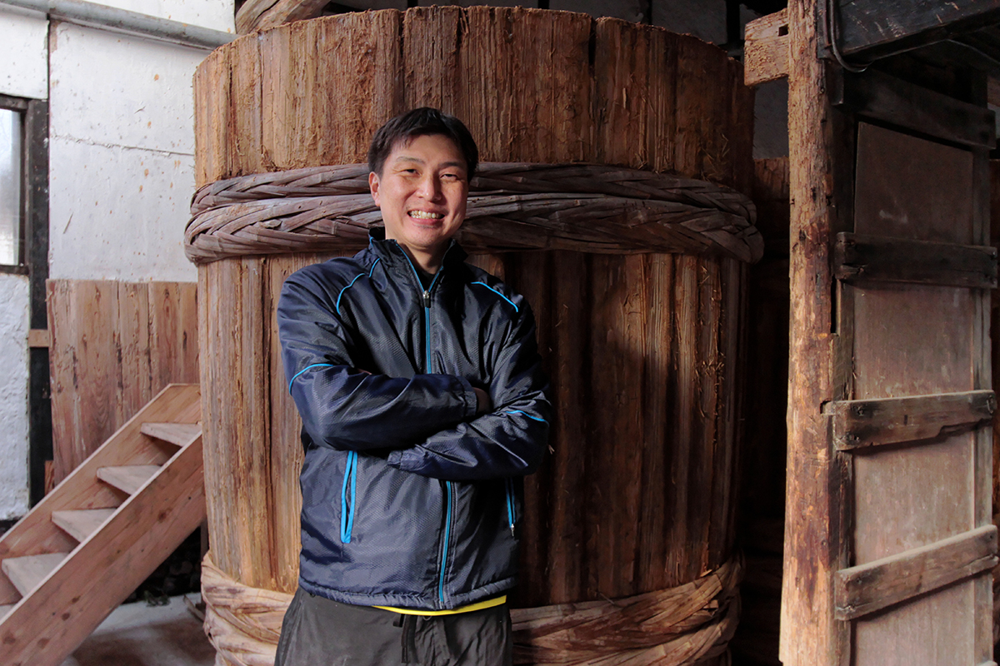
Сейчас мастерской управляет владелец в девятом поколении. О здешней ферментации он говорит так:
«Думаю, культура ферментации прижилась здесь благодаря тёплому климату и хорошей воде из Ёсино».
Владелец «Фукудзю сёю» в девятом поколении
Фукудзю сёю
- Адрес
- префектура Токусима, Наруто, Оаса-тё, Икэтани, Ооиси, 8
- Телефон
- +81 88-689-1008
- Часы работы
- 8:30–17:00
- Выходные
- воскресенье и праздники
- Экскурсия по цеху
- по предварительной записи
- Сайт
- fukujyu1826.com
В мастерской водят экскурсии, и гости видят, как рождаются соус и мисо. Главная редкость здесь это огромные деревянные чаны, которым уже больше ста лет. И ещё стоит увезти с собой «судати-сёю»: соевый соус с добавлением зелёного цитруса судати, без добавок и ароматизаторов.
Керамика
Отанияки и посуда для ферментации
Мастерская «Мори» в Наруто основана в 1912 году. Здесь сохранилась редкая для страны печь для обжига, построенная прямо на равнине, а сама керамика Отанияки известна с 1780 года. Без этой посуды здешней ферментации было бы не обойтись: Отанияки это соус, сакэ, соль и индиго.
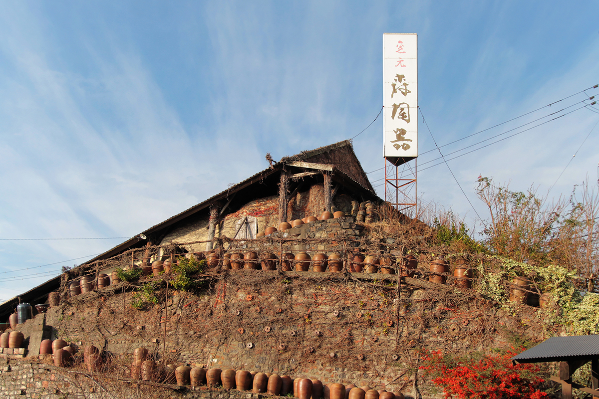
Владелец «Фукудзю сёю» любит повторять, что город вырос вокруг посуды. Раньше соус развозили по домам на тележках и велосипедах, и чаны для него тоже были из Отанияки. Соль варили в здешних глиняных чанах, а в сосудах покрупнее, незаменимых для окрашивания, держали краситель по всей стране.
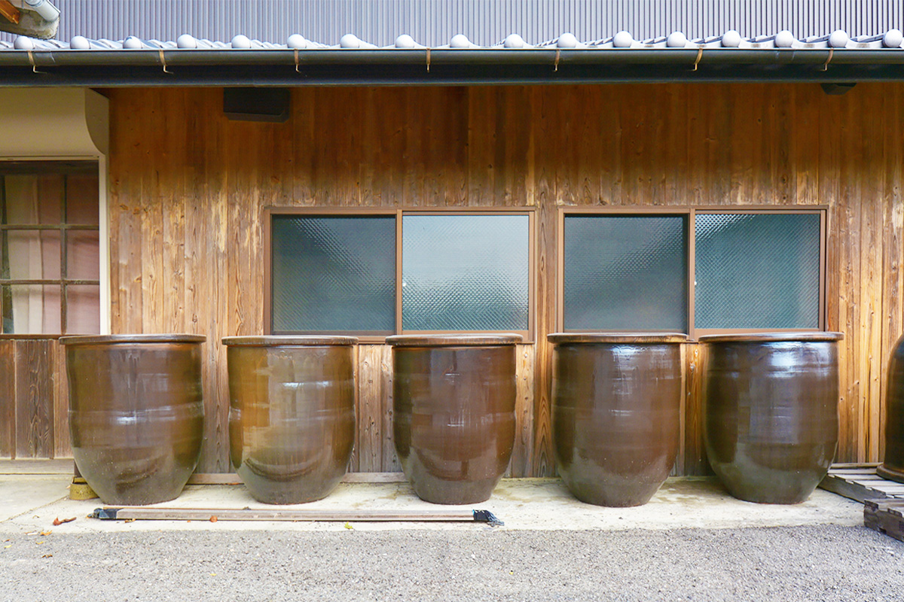
Мастерская берётся и за мелкую посуду вроде чашек, и за огромные вещи: чаны для индиго и вазоны для водных растений она делает вдвоём на старом станке «нэрокуро». Побывав здесь, стоит и купить что-нибудь из повседневной утвари, и записаться на мастер-класс: под присмотром наставника можно расписать своё изделие или слепить его из местной глины.
Отанияки: мастерская «Мори»
- Адрес
- префектура Токусима, Наруто, Оаса-тё, Отани, Ирино-ката, 24
- Телефон
- +81 88-689-0022
- Часы работы
- 8:30–17:00 (по воскресеньям 9:30–16:30)
- Выходные
- нет
- Мастер-класс
- по предварительной записи
- Сайт
- morigama.jp
Удацу
Купеческие кварталы Мимы
Про удацу нельзя не рассказать, если речь о торговле индиго. Удацу это высокая противопожарная стенка над краем крыши; её начали ставить после большого пожара примерно триста лет назад, чтобы огонь не перекидывался на соседний дом. Пришла эта форма, как считают, из китайской провинции Юньнань. Один такой гребень стоил больше миллиона иен в нынешних деньгах, так что удацу быстро стал знаком достатка. Отсюда и выражение «удацу поднялся» о человеке, который выбился в люди.
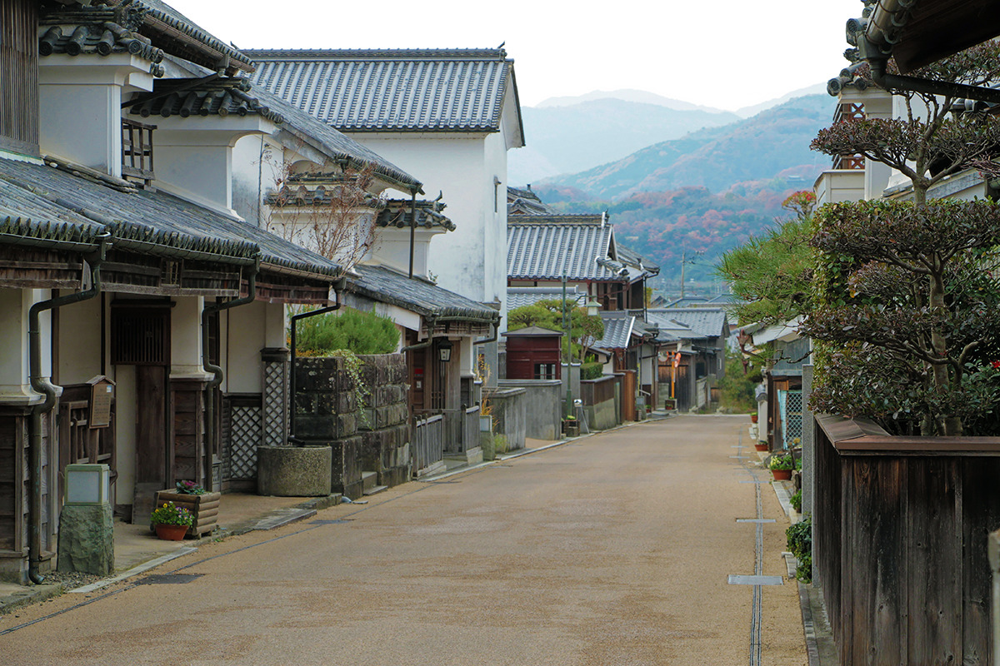
В квартале Вакимати города Мима сохранилось 84 исторических здания. Многие богатые дома принадлежали торговцам индиго, а те нередко сами были красильщиками.
Один из самых известных купеческих родов носил торговое имя «Санао». Его дом, усадьба семьи Ёсида, открыт для осмотра. Здание сохранило прежние размеры: одиннадцать кэн по фасаду и тридцать в глубину (кэн это около 1,8 метра). Это один из редких памятников, что рассказывает о былом богатстве Токусимы.
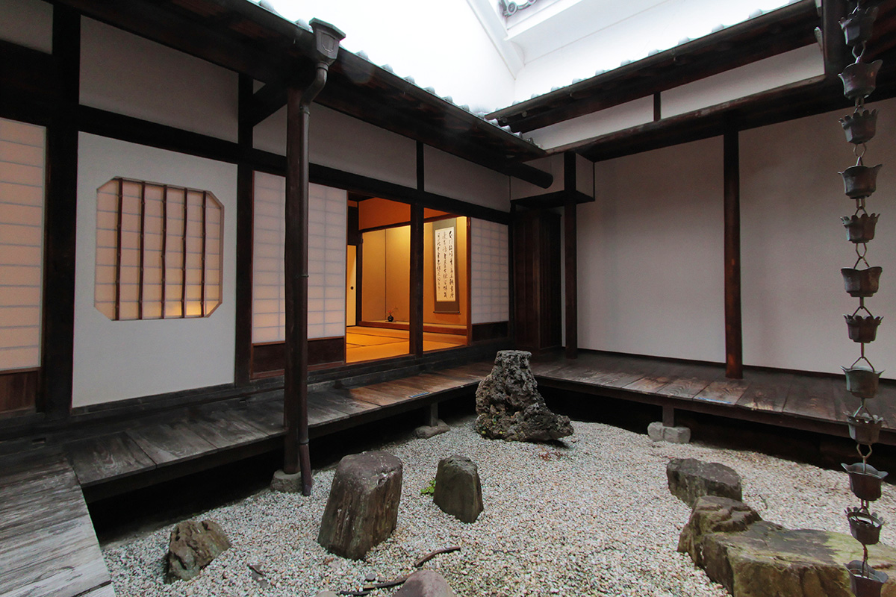
Ходить по такому кварталу лучше без спешки: следы эпохи индиго встречаются на каждом шагу. Местная хозяйка, годами державшая в квартале винную лавку, охотно рассказывает старые истории. А ещё в Вакимати стоит единственный на весь квартал театр «Одеон-дза», напоминающий о том, как бурно здесь когда-то шла театральная жизнь.
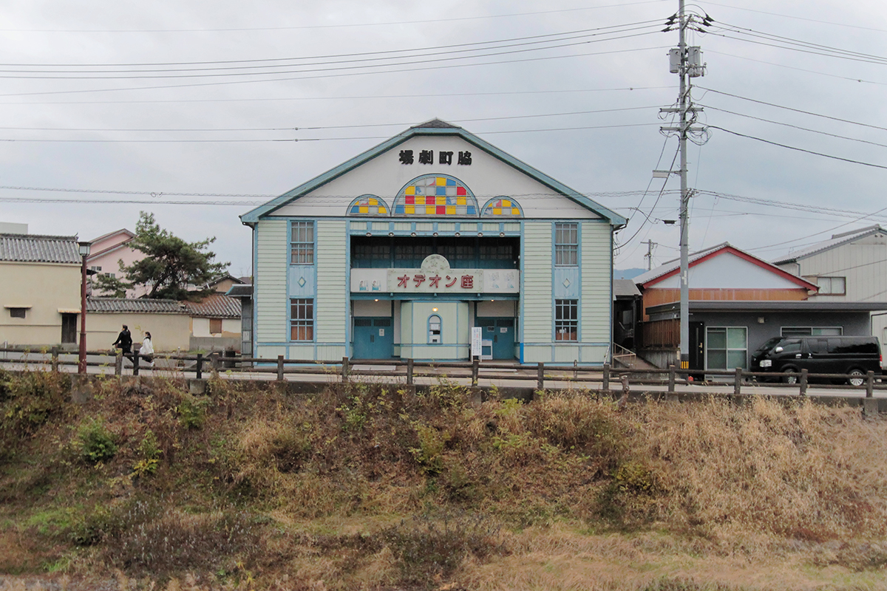
Усадьба семьи Ёсида
- Адрес
- префектура Токусима, Мима, Вакимати, 53
- Телефон
- +81 883-53-0960
- Часы работы
- 9:00–17:00 (последний вход 16:30)
- Вход
- взрослые 510 иен, дети 250 иен
- Выходные
- новогодние праздники
Разговоры с теми, кто переехал сюда в последние годы, и с теми, кто здесь вырос, вплетаются в прогулку. Иногда такие встречи дают путешествию больше, чем осмотр достопримечательностей: ты узнаёшь не только историю места, но и то, как в нём живут сегодня.
Рекомендуем
Ещё одиннадцать мест в долине Ёсино
Долина Ёсино хранит не только историю, но и живые сегодняшние точки, ради которых сюда стоит завернуть. Старинные дома, превращённые в отели и рестораны, винокурни, ремёсла и кухня из местных продуктов: вот наш список.
Усадьба Ава-Дзюробэ
В городе Токусима стоит усадьба на месте дома деревенского старосты Бандо Дзюробэ (казнён в 1698 году, вину ему так и не объявили: он пал жертвой политики своего княжества). Его имя позже позаимствовали для пьесы о семейной распре, так и появилась знаменитая постановка «Кэйсэй Ава-но Наруто».
Сегодня здесь каждый день играют Ава-нингё дзёрури, кукольный театр, признанный важным нематериальным народным культурным достоянием Японии. Представления идут в усадьбе с садом, разбитым ещё в эпоху Эдо; в залах выставлены куклы и рассказывается, чем здешний кукольный театр отличается от других. Индиго сыграло с Токусимой добрую шутку: и сегодня в префектуре работает больше кукольных трупп и мастеров кукол, чем где-либо в стране.
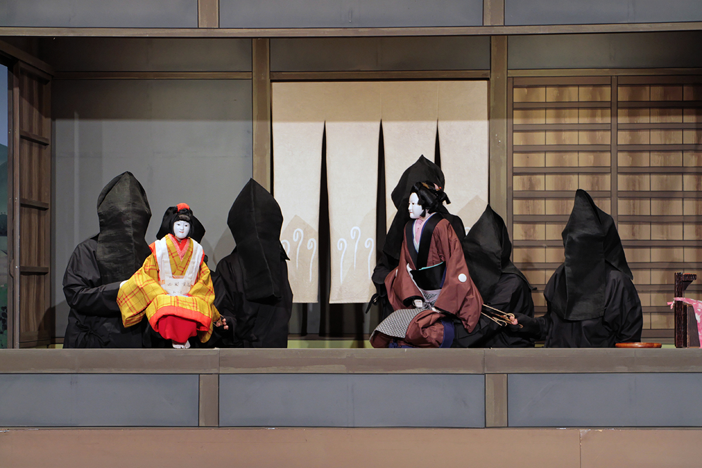
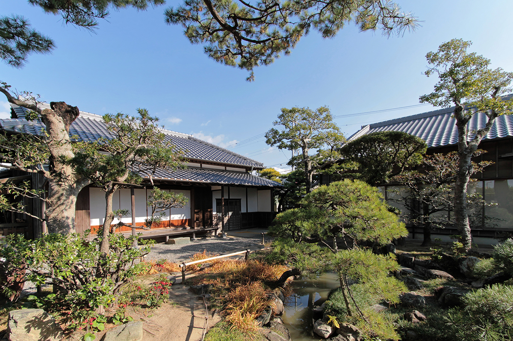
Усадьба Ава-Дзюробэ
- Адрес
- префектура Токусима, Токусима, Каваути-тё, Миядзима-мотоура, 184
- Телефон
- +81 88-665-2202
- Часы работы
- 9:30–17:00 (с 1 июля по 31 августа до 18:00)
- Вход
- взрослые 410 иен, старшеклассники и студенты 310 иен, школьники 200 иен
- Выходные
- новогодние праздники
- Сайт
- joruri.info
French Monstar
На западном берегу, вдоль дороги Наруто-скайлайн в природном парке, примостилась кондитерская-кафе с видом на спокойное Внутреннее море. Её гордость это печенье-сабле на основе сакэ-касу из дайгиндзё: сладость васамбона, соль и глубина итальянского сыра и напоследок тонкий вкус сакэ. Получается солёный десерт для взрослых, который хорошо идёт к шампанскому.
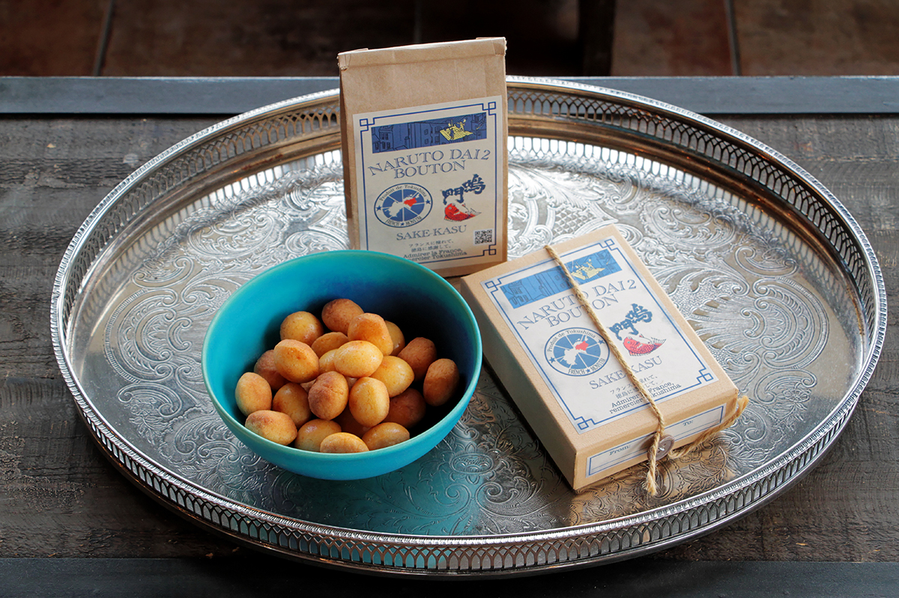
French Monstar
- Адрес
- префектура Токусима, Наруто, Сэто-тё, Накадзимада, Хигасияма, 9
- Телефон
- +81 88-661-5566
- Часы работы
- 10:00–12:00, 13:00–17:00 (по субботам, воскресеньям и праздникам 10:00–12:00, 12:30–17:00)
- Выходные
- вторник
Door!
У самого вокзала Токусимы, в трёх минутах пешком, есть столовая, где кормят так, как дома. Хозяева собрали в меню местные продукты: фирменную курицу «Авао-дори», цитрус судати и овощи с окрестных полей. Плотные обеды с выбором основного и гарнирного блюда насыщают надолго, а завтрак целиком из токусимских продуктов полюбили постояльцы гостиниц у вокзала.
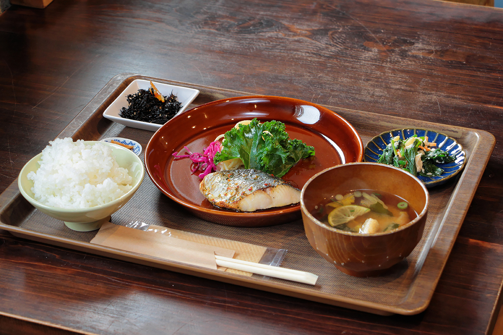
Door!
- Адрес
- префектура Токусима, Токусима, Тэрадзимахонтё-хигаси, 1-20
- Телефон
- +81 88-676-2313
- Часы работы
- 7:30–17:00 (ужин только по предварительной записи)
- Выходные
- воскресенье и праздники (нерегулярно)
- Сайт
- aosi.jp
PAYSAGE MORIGUCHI
В квартале удацу города Мима, что вырос как городок торговцев при замке Ваки, в 1881 году построили купеческий дом. Теперь в нём всего пять номеров, и это один из самых уютных отелей долины. Мебель и искусство подобраны с любовью, окна выходят во внутренний двор, а старинные балки и стены никуда не делись.
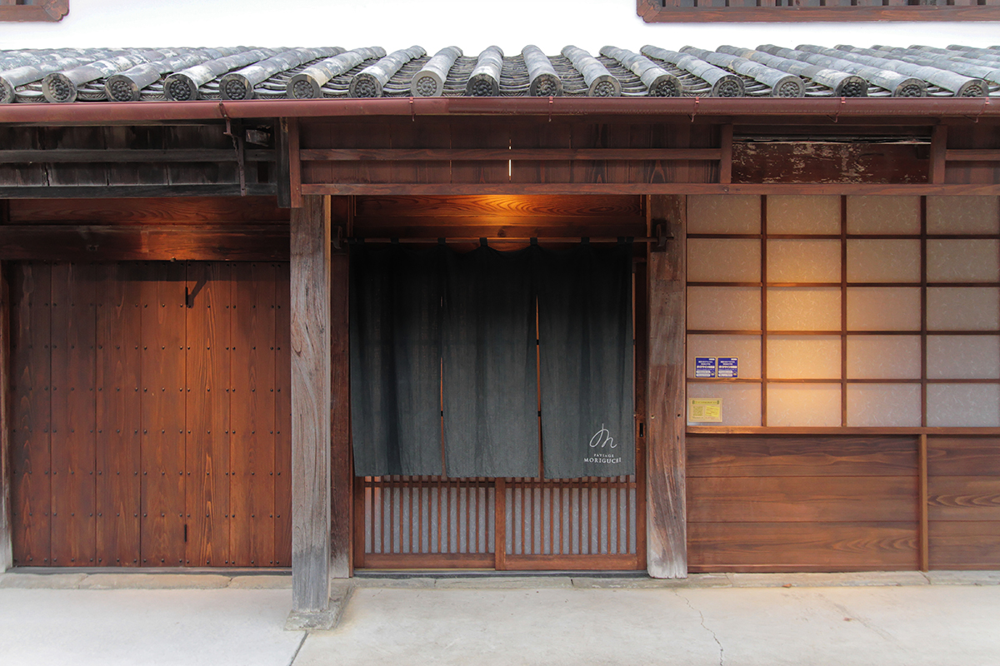
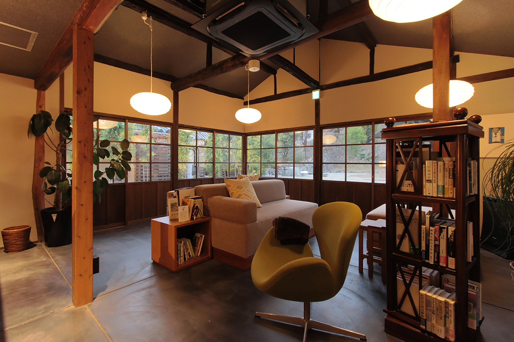
PAYSAGE MORIGUCHI
- Адрес
- префектура Токусима, Мима, Вакимати, 148-4
- Телефон
- +81 883-52-1578
- Цены
- от 14 800 иен за ночь с лёгким завтраком (с налогом и обслуживанием), за одного гостя при двухместном размещении
- Номера
- 5 комнат
- Заезд
- 14:00
- Выезд
- 11:00
California Table
На высоком берегу острова Симададзима, откуда видно Авадзи, в парке у Внутреннего моря стоит курортный отель HOTEL RIDGE, а при нём ресторан California Table. Ужин тут европейский, на французской основе: запечённая свинина «ава тонтон», гриль из рыбы савара и другие блюда из любимых местных продуктов. К ним подают калифорнийское вино.
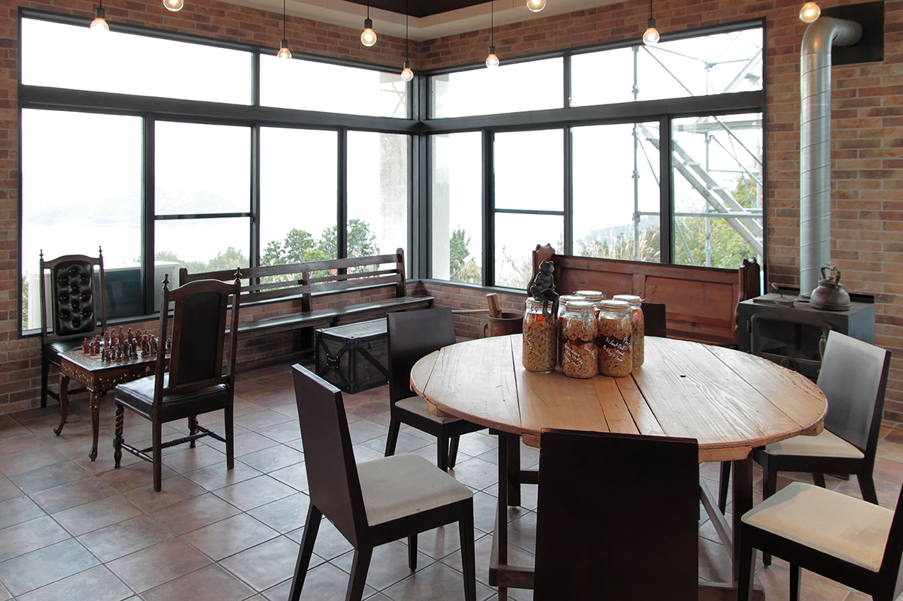
Терраса смотрит прямо на мост Онаруто и залив, и эта площадка не случайна: основатель отеля вдохновился видом на мост Золотые Ворота в Сан-Франциско и открыл ресторан именно здесь.
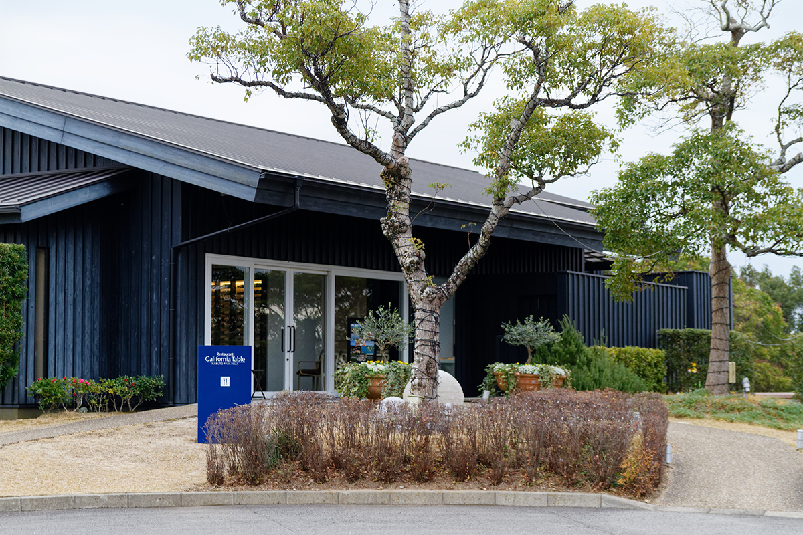
California Table
- Адрес
- префектура Токусима, Наруто, Сэто-тё, Осимада, Накаяма, 1-1
- Телефон
- +81 88-688-0212
- Часы работы
- обед 11:00–14:00, ужин 17:00–21:00 (ужин по субботам, воскресеньям и праздникам, только по брони за 3 дня)
- Выходные
- понедельник
BROMPTON TOUR STATION
Тем, кто хочет объехать квартал удацу на колёсах, подойдёт станция проката в самом сердце старой улицы. Здесь выдают складные велосипеды английской марки BROMPTON, и вместе с гидом можно неспешно прокатиться по историческим переулкам. При станции работает и своя кофейная обжарка: чашку свежего кофе тут нальют сразу.
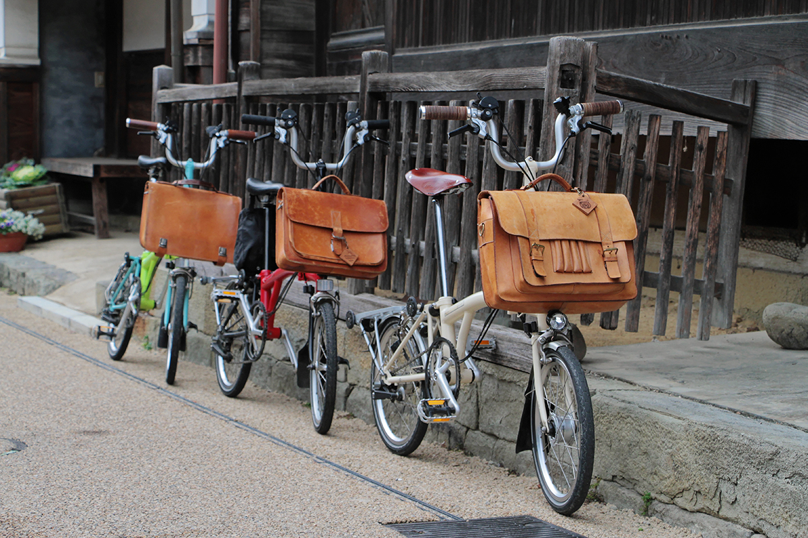
BROMPTON TOUR STATION
- Адрес
- префектура Токусима, Мима, Вакимати, 55
- Телефон
- 080-3920-3826
- Часы работы
- 11:00–18:00
- Цены
- от 6000 иен (прокат велосипеда и услуги гида), страховка 500 иен
Punta
В старом доме квартала удацу открылась итальянская кухня. Меню здесь разработали под началом шеф-повара столичного ресторана: в сезон готовят курицу «Авао-дори», а летом к столу подают аю, пойманную в Ёсино. Название на итальянском значит «остриё», и кухня тут держит марку: сезонные продукты и хорошее вино.
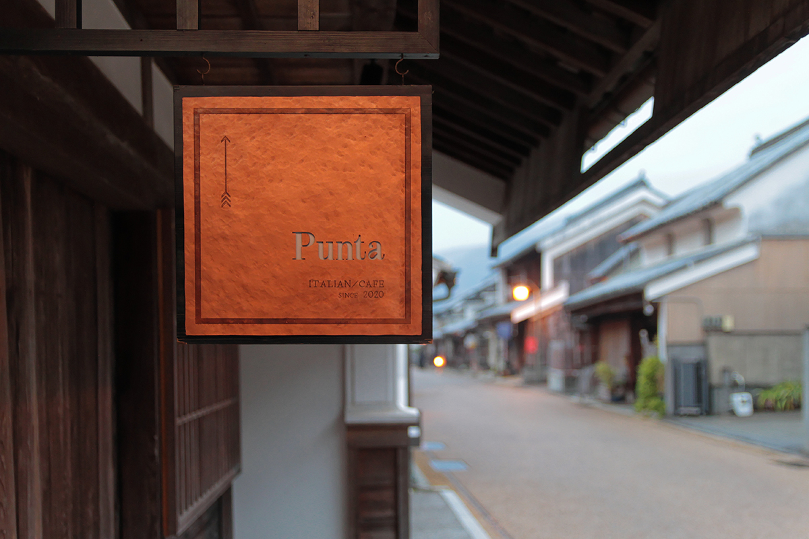
Punta
- Адрес
- префектура Токусима, Мима, Вакимати, 39-1
- Телефон
- +81 883-52-8137
- Часы работы
- обед 11:00–14:30 (последний заказ 13:30), ужин 18:00–22:00 (последний заказ 21:00)
- Выходные
- понедельник (в воскресенье только обед)
- Сайт
- punta-mima.com
Центр ремёсел Мирай Кобо
Туристический центр в квартале удацу занимает здание в духе старой налоговой управы: тут и справочная, и мастерская, где показывают и делают зонты «мима-вагаса». Раньше такие зонты с пёстрыми шёлковыми кистями звали «ава-бангаса», и владеть ими мог позволить себе только состоятельный человек. По этим роскошным зонтам тоже читается история города.
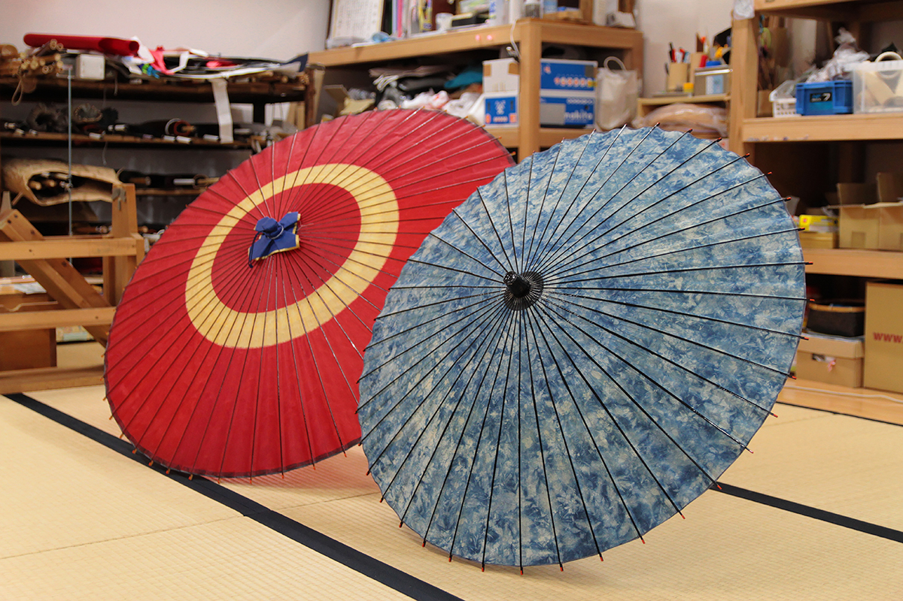
Мирай Кобо
- Адрес
- префектура Токусима, Мима, Вакимати, 92
- Телефон
- +81 88-353-8599
- Часы работы
- 9:00–17:00
- Вход
- бесплатный
- Выходные
- новогодние праздники
Винодельня Natan
Токусима долго обходилась без виноделен, пока в 2021 году в городе Миёси не вышел первый винтаж Natan. Виноград здесь посадили в 2016 году, спустя два года начали заказывать вино на стороне, а потом построили своё хозяйство. В основе подхода местные дрожжи и отказ от осветления и фильтрации: вино делают с расчётом на характер ягоды и на японский вкус.
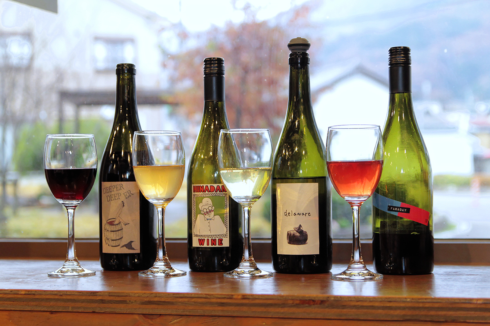
Винодельня Natan
- Адрес
- префектура Токусима, Миёси, Икэдамати, Мати, 2187-7
- Телефон
- +81 883-87-8688
- Часы работы
- 9:00–16:30
- Выходные
- суббота, воскресенье, праздники
- Сайт
- natan.jp
heso salon
Там, где сходятся дороги Сикоку, в городе Миёси, есть кафе-ресторан в здании бывшего суши-бара. Город зовут «пупом Токусимы», и кухня обыгрывает это соседство: на тарелках встречаются продукты сразу четырёх префектур острова. Советуем дичь из окрестностей Ия: оленину и кабана здесь готовят с пряностями и подают по-новому.
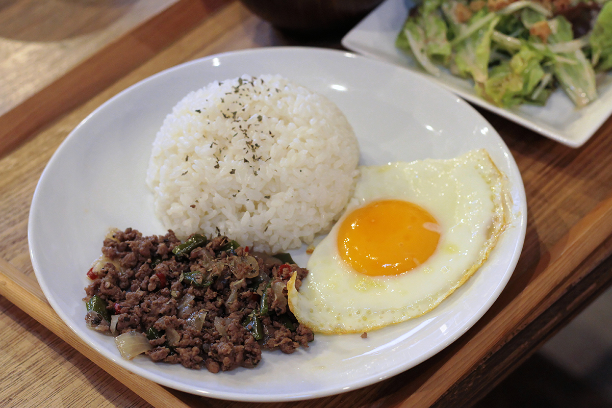
heso salon
- Адрес
- префектура Токусима, Миёси, Икэдамати, Сарада, 1804-9
- Телефон
- +81 883-70-0166
- Часы работы
- обед 11:00–14:30 по будням и 11:00–15:00 по субботам, воскресеньям и праздникам; ужин 17:00–22:00
- Выходные
- понедельник
Квартал Икэда и пивоварни
На западе префектуры лежит город Миёси, а в нём квартал Икэда с собственными удацу. В конце эпохи Эдо и в эпоху Мэйдзи здесь вовсю крутили нарезанный табак «ава-кидзами»: в лучшие годы работало около сотни частных табачных мастерских. Когда государство взяло табак в свои руки, производство угасло, и бывшие табачники перешли на сакэ. Так квартал прославился пивоварнями.
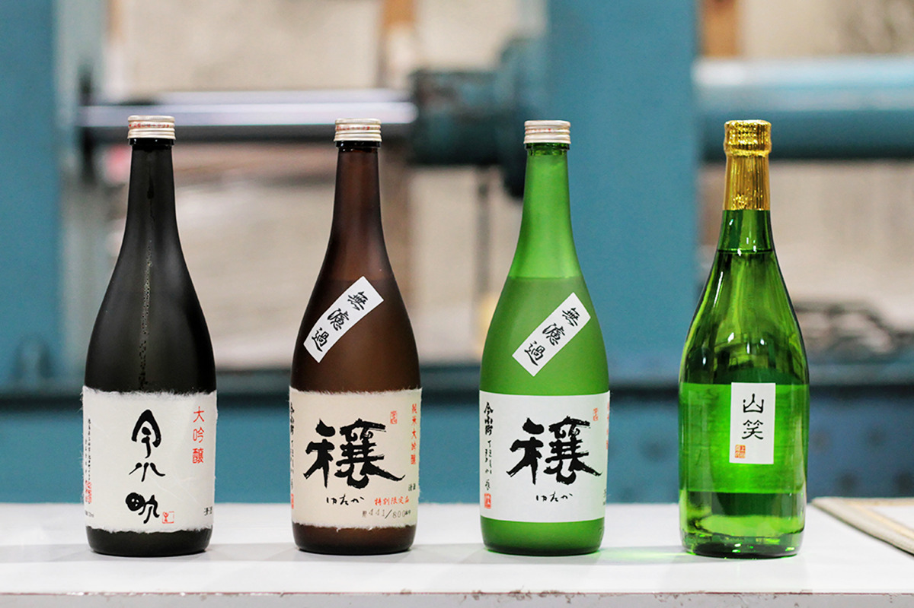
Одна из пивоварен выросла из табачного дела, другая из семьи самураев, и у каждой свой характер. Сейчас в квартале варят сакэ под марками «Миёсикику» и «Имакомати», и в обеих мастерских можно записаться на экскурсию. А окрестности квартала, где Ёсино течёт вольготно, вместе с ущельем Обокэ, долиной Ия и второй по высоте вершиной запада Японии горой Цуруги складываются в будущий геопарк Миёси.
Пивоварня «Миёсикику»
- Адрес
- префектура Токусима, Миёси, Икэдамати, Сарада, 1661
- Телефон
- +81 883-72-0053
- Часы работы
- 8:00–18:00
- Выходные
- нерегулярные
- Экскурсия
- по предварительной записи
- Сайт
- miyoshikiku.shop
Пивоварня «Тюва Сётэн» (сакэ «Имакомати»)
- Адрес
- префектура Токусима, Миёси, Икэдамати, Сарада, 1756
- Телефон
- +81 883-72-0126
- Часы работы
- 8:30–17:00
- Выходные
- воскресенье, праздники; бывают дополнительные
- Экскурсия
- по предварительной записи
- Сайт
- imakomachi.com